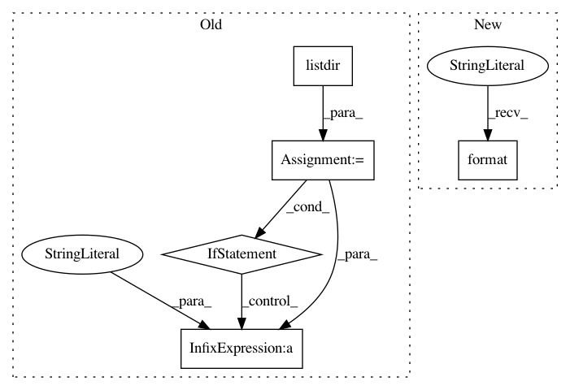

bfff0cb09ae56b722c03f014337346c3a095abea,slips.py,,,#,35
Before Change
outputProcessQueue.put("01|main|[main] Searching for modules")
if os.path.isdir("modules"):
// Itereate over all the files and folders in the modules folder
for modulefoldername in os.listdir("modules"):
// For each of them, check that they are a folder first
if os.path.isdir("modules/" + modulefoldername):
// If it is a folder, load its module that is named as the folder
modulename = "modules/" + modulefoldername + "/" + modulefoldername
outputProcessQueue.put("02|main|[main] Module to load: "+modulename)
from modulename import modulefoldername
moduleProcess = InputProcess(None, outputProcessQueue, profilerProcessQueue, args.filepath, config)
inputProcess.start()
outputProcessQueue.put("30|main|Started input thread")
else:
outputProcessQueue.put("01|main|[main] No modules folder found. No modules will be loaded")
After Change
// Start each module in the folder modules
outputProcessQueue.put("01|main|[main] Starting the modules")
for module_name in __modules__:
outputProcessQueue.put("01|main|\t[main] Starting the module {} ({})".format(module_name, __modules__[module_name]["description"]))
module_class = __modules__[module_name]["obj"]
ModuleProcess = module_class(outputProcessQueue, config)
ModuleProcess.start()
In pattern: SUPERPATTERN
Frequency: 3
Non-data size: 5
Instances
Project Name: stratosphereips/StratosphereLinuxIPS
Commit Name: bfff0cb09ae56b722c03f014337346c3a095abea
Time: 2019-04-02
Author: eldraco@gmail.com
File Name: slips.py
Class Name:
Method Name:
Project Name: vatlab/SoS
Commit Name: 4b2376655a5bc5627fdac748c5ffda11b543719d
Time: 2016-11-21
Author: ben.bog@gmail.com
File Name: test/run_tests.py
Class Name:
Method Name: importTests
Project Name: snipsco/snips-nlu
Commit Name: c31afbb3c7523e111bb13f16afb2cb98d3ffe424
Time: 2018-06-15
Author: adrien.ball@snips.net
File Name: snips_nlu/resources.py
Class Name:
Method Name: load_resources